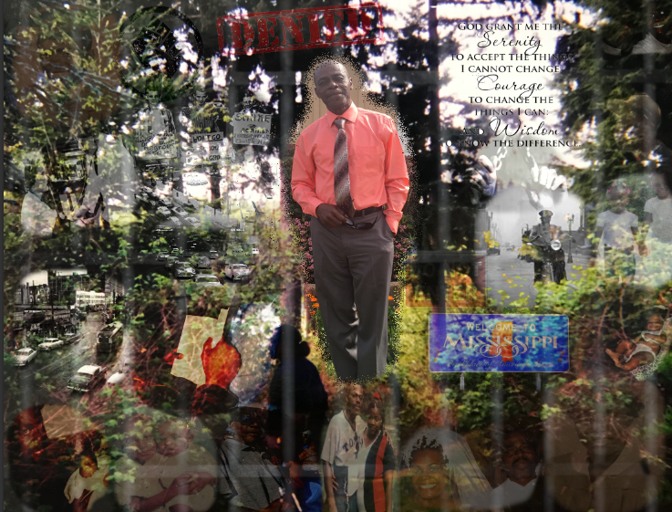

This is the Humanities portion of my project. In Humanities, we were assigned to create a layered portrait of our interviewee. This was followed by a reflection of that same portrait. In my refelection, I explain style attributes of the image. Afterward, we chose a main idea from our interview and crafted an essay about it. The person I chose to interview was my father. My reason for choosing him is due to the fact that he has a very interesting story to tell. During this project, I grew closer to my father and discovered things I never would've known.
Linked to the photo below is the reflection of my subject's portrait.
Linked to the photo below is the Essay I drafted based off of my subject's interview